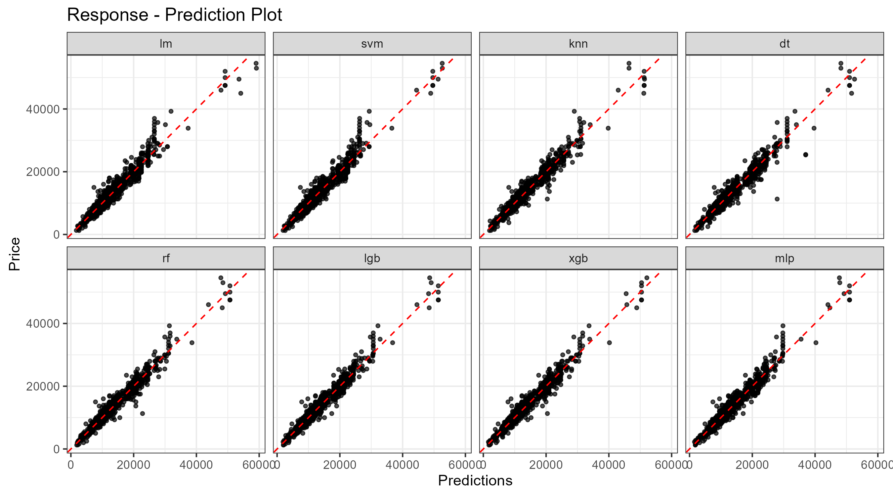
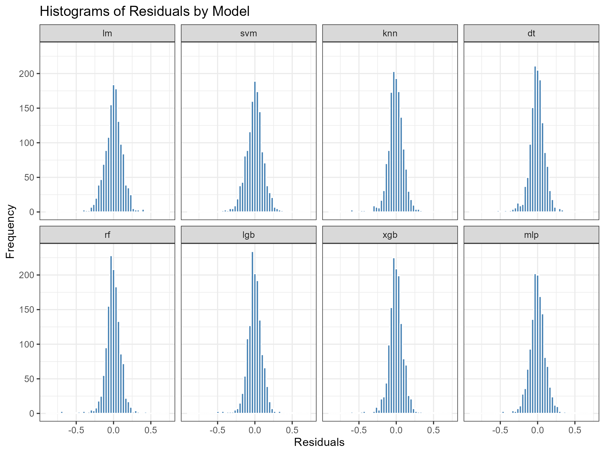
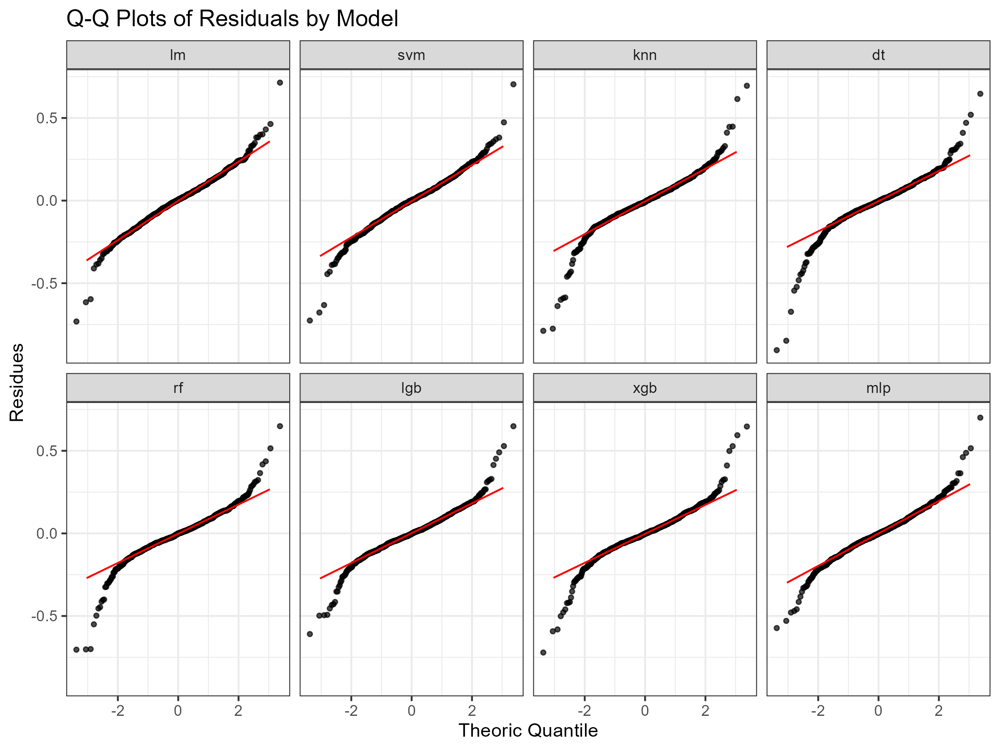

Exam DataCamp
José María Martín
2024-08-06
1 Setup
1.1 Packages
1.2 Import Data
1.3 Code
The code, output datasets, and diagrams are arranged in parallel with the index of this document.
## ¦ .gitignore
## ¦ .Rhistory
## ¦ DSP.Rproj
## ¦ Exam.html
## ¦ Exam.Rmd
## ¦ README.md
## ¦
## +---data
## ¦ 01_raw.rds
## ¦ 02_validated.RData
## ¦ 03_explore.RData
## ¦ 04_correlations.RData
## ¦ 06_metrics.RData
## ¦ 06_models.RData
## ¦
## +---figures
## ¦ 05_categorical_distr_plot.png
## ¦ 06_residuals_histogram.png
## ¦ 06_residuals_qqplot.png
## ¦ 06_response_prediction.png
## ¦
## +---scripts
## 01_load.R
## 02_validations.R
## 03_explore.R
## 04_correlations.R
## 05_aov.R
## 06_machine_learning_models.R
## 2 Data Analysis Framework
2.1 Question/Problem Statement
This document will describe each step of the process that allows achieving the objectives of the exercise, both trivial aspects and aspects related to decision-making with a subjective component.
The objective is to complete the exercise requirements, which involve analyzing the data, modeling the used vehicle price estimation with an accuracy within 10%, and sharing the results.
2.2 Structure of Information
Each step of the process is performed using R code in files located in the scripts folder, numbered to follow a reading sequence. The input information and summary of the analysis processes are located in the data folder and in the figures folder. This document serves as a presentation layer for the results.
This exercise uses Tidiverse as ecosystem for data analysis, also consistent withe Tidyverse style guide. For modelling takes an approach not featured in the DataCamp courses, Tidymodels, although it is mentioned in one blog.
2.3 Workflow
3 Preliminary Analysis
3.1 Load Data
The script in the file 01_load_data.R loads the dataset in CSV format, from the path (indicated in the exercise), performs a minimal transformation to contain the information in an object of the dataframe class, and saves the data in the file 01_raw.rds for later use in the data folder.
3.2 Data Validation
The analysis aimed at analyzing the quality of the data is carried out in the file 02_validation.R, performing the following actions:
The reviews show that the data is almost clean and only anomalies appeared in the engineSize variable. Additionaly, minor formatting issues in the model variable have been standardized.
Additionally, text variables were defined as factors.
3.2.1 Missing Values
There are no missing values in the Dataset.| model | year | price | transmission | mileage | fuelType | tax | mpg | engineSize |
|---|---|---|---|---|---|---|---|---|
| 0 | 0 | 0 | 0 | 0 | 0 | 0 | 0 | 0 |
3.2.2 Text Variables Validation
A review of the text-type variables reveals that the model field contains strings with spaces, which need to be corrected for further analysis. It is also noted that the strings do not contain special characters, except for the “-” sign, which does not pose any issues. Finally, an inconsistency is observed in the string PROACE VERSO, as it is in uppercase letters, unlike the rest of the models.
| Variable | Levels |
|---|---|
| model | GT86, Corolla, RAV4, Yaris, Auris, Aygo, C-HR, Prius, Avensis, Verso, Hilux, PROACE VERSO, Land Cruiser, Supra, Camry, Verso-S, IQ, Urban Cruiser |
| transmission | Manual, Automatic, Semi-Auto, Other |
| fuelType | Petrol, Other, Hybrid, Diesel |
Once the spacing and formatting issues have been corrected, the text variables will be transformed to be used as factors for further analysis.
Since economic processes like inflation or asset depreciation occur continuously over time, date data should be treated as integer-type numeric data. Therefore, the year field will not be converted into a factor.
3.2.3 Numeric Variables Validation
In numeric variables, the review consists of locating atypical values: negative values and zero values.| year | price | mileage | tax | mpg | engineSize |
|---|---|---|---|---|---|
| 0 | 0 | 0 | 0 | 0 | 0 |
| year | price | mileage | tax | mpg | engineSize |
|---|---|---|---|---|---|
| 0 | 0 | 0 | 1790 | 0 | 6 |
| fuelType | n |
|---|---|
| Diesel | 27 |
| Hybrid | 995 |
| Other | 27 |
| Petrol | 741 |
| model | year | price | transmission | mileage | fuelType | tax | mpg | engineSize |
|---|---|---|---|---|---|---|---|---|
| Yaris | 2016 | 12300 | Manual | 6148 | Hybrid | 0 | 86.0 | 0 |
| Yaris | 2016 | 11000 | Automatic | 39909 | Hybrid | 0 | 86.0 | 0 |
| Aygo | 2019 | 9800 | Manual | 3635 | Petrol | 150 | 56.5 | 0 |
| Aygo | 2019 | 8000 | Manual | 8531 | Petrol | 145 | 56.5 | 0 |
| Aygo | 2019 | 8000 | Manual | 5354 | Petrol | 145 | 56.5 | 0 |
| C-HR | 2017 | 14300 | Manual | 46571 | Petrol | 145 | 47.1 | 0 |
| model | year | fuelType | engineSize |
|---|---|---|---|
| Yaris | 2016 | Hybrid | 1.5 |
| Yaris | 2016 | Hybrid | 0.0 |
| Aygo | 2019 | Petrol | 1.0 |
| Aygo | 2019 | Petrol | 0.0 |
| C-HR | 2017 | Petrol | 1.2 |
| C-HR | 2017 | Petrol | 0.0 |
| C-HR | 2017 | Petrol | 1.8 |
| model | year | transmission | fuelType | engineSize |
|---|---|---|---|---|
| C-HR | 2017 | Manual | Petrol | 1.2 |
| C-HR | 2017 | Manual | Petrol | 0.0 |
| model | year | transmission | mileage | fuelType | tax | mpg | engineSize | price |
|---|---|---|---|---|---|---|---|---|
| Yaris | 2016 | Manual | 6148 | Hybrid | 0 | 86.0 | 1.5 | 12300 |
| Yaris | 2016 | Automatic | 39909 | Hybrid | 0 | 86.0 | 1.5 | 11000 |
| Aygo | 2019 | Manual | 3635 | Petrol | 150 | 56.5 | 1.0 | 9800 |
| Aygo | 2019 | Manual | 8531 | Petrol | 145 | 56.5 | 1.0 | 8000 |
| Aygo | 2019 | Manual | 5354 | Petrol | 145 | 56.5 | 1.0 | 8000 |
| C-HR | 2017 | Manual | 46571 | Petrol | 145 | 47.1 | 1.2 | 14300 |
3.3 Exploratory Analysis
Preliminary analysis is performed in file 03_explore.R
3.3.1 Dataset Overview
The dataset comprises 9 variables and 6738 observations, with a total size of 0.5 Mb.
This is a random sample that replicates the functionality of the glimpse function.| Variable | Values |
|---|---|
| model | Yaris, Corolla, Aygo, Corolla, Yaris, Aygo, C-HR, Yaris, Aygo, Aygo |
| year | 2008, 2014, 2017, 2019, 2019, 2015, 2019, 2015, 2016, 2017 |
| price | 7795, 10740, 6995, 16495, 8895, 11995, 9300, 8980, 17995, 25650 |
| transmission | Automatic, Manual, Manual, Manual, Manual, Automatic, Automatic, Automatic, Manual, Automatic |
| mileage | 40681, 32754, 7620, 38876, 20718, 21000, 7670, 30130, 9275, 24512 |
| fuelType | Petrol, Hybrid, Petrol, Petrol, Petrol, Petrol, Petrol, Petrol, Petrol, Petrol |
| tax | 30, 145, 145, 0, 0, 140, 145, 145, 145, 0 |
| mpg | 68.9, 56.5, 65.7, 52.3, 53, 76.3, 52.3, 74.3, 56.5, 86 |
| engineSize | 1.5, 2, 1.3, 1.8, 1, 1.6, 1.6, 1.8, 1, 1.8 |
| variable | Type | NA | Unique | Min | Mean | Max |
|---|---|---|---|---|---|---|
| model | factor | 0 | 18 | NA | NA | NA |
| year | numeric | 0 | 23 | 1998 | 2017 | 2020 |
| transmission | factor | 0 | 4 | NA | NA | NA |
| mileage | numeric | 0 | 5699 | 2 | 22857 | 174419 |
| fuelType | factor | 0 | 4 | NA | NA | NA |
| tax | numeric | 0 | 29 | 0 | 95 | 565 |
| mpg | numeric | 0 | 81 | 3 | 63 | 235 |
| engineSize | numeric | 0 | 15 | 1 | 1 | 4 |
| price | numeric | 0 | 2114 | 850 | 12522 | 59995 |
3.3.2 Variable Classification
This classification according to the nature of the variables is useful throughout the different analyses.| Tipo | Variables |
|---|---|
| target | price |
| categorical | model, transmission, fuelType |
| numeric | year, mileage, tax, mpg, engineSize |
3.3.3 Target Description
 As can be seen, this is a bimodal distribution skewed to the right (Mean
> Median), with positive values. Some statistics of the empirical
distribution are described.
As can be seen, this is a bimodal distribution skewed to the right (Mean
> Median), with positive values. Some statistics of the empirical
distribution are described.
| n_missing | Min | P25 | Median | Mean | P75 | Max | StdDesv | IQR |
|---|---|---|---|---|---|---|---|---|
| 0 | 850 | 8290 | 10795 | 12522 | 14995 | 59995 | 6345 | 6705 |
This type of distribution in the dependent variable has important implications, as it can affect the validity of the assumptions underlying the classical Linear Regression model (OLM). These assumptions include the normality of the residuals and homoscedasticity (constant variance of the errors). A right skew indicates that the data are not symmetric, which can lead to standard errors that violate the assumptions of normality in the residuals and homoscedasticity, resulting in unreliable inferences. In such cases, one might consider transforming the dependent variable, often using a logarithmic transformation, or employing alternative models such as Generalized Linear Regression (GLM) with a Gamma link function, which is commonly used when the dependent variable is a price.
3.3.4 Numeric Variables Exploration
The numerical variables exhibit the following distributions:

 LOESS smoothing is useful for illustrating the relationship between
numerical variables and the target variable (price), highlighting
non-linear relationships and non-constant variances. Interestingly, the
mileage variable exhibits a quasi-linear response, likely due
to the low number of data points at the right end of the
distribution.
LOESS smoothing is useful for illustrating the relationship between
numerical variables and the target variable (price), highlighting
non-linear relationships and non-constant variances. Interestingly, the
mileage variable exhibits a quasi-linear response, likely due
to the low number of data points at the right end of the
distribution.
 To adapt the year variable, although it can be considered an
ordered categorical variable, it should be treated as a numeric variable
and, therefore, does not require transformation.
To adapt the year variable, although it can be considered an
ordered categorical variable, it should be treated as a numeric variable
and, therefore, does not require transformation.
3.3.5 Categorical Variables
Review of the categorical variable levels shows the uneven distribution of variables with multiple model levels, and very low frequencies in the fuelType and transmission variables. This anticipates overfitting problems.
Here’s an improved version of your sentence:
A review of the categorical variable levels unveals an uneven distribution among variables with multiple model levels and very low frequencies in the fuelType and transmission variables. This imbalance suggests potential overfitting problems.| variable | levels_freq |
|---|---|
| fuelType | Petrol(60.7%), Hybrid(30.3%), Diesel(7.5%), Other(1.6%) |
| model | Yaris(31.5%), Aygo(29.1%), Auris(10.6%), C-HR(7.1%), RAV4(7%), Corolla(4%), Prius(3.4%), Avensis(1.7%), Verso(1.7%), Hilux(1.3%), GT86(1.1%), Land_Cruiser(0.8%), Proace_Verso(0.2%), Supra(0.2%), Camry(0.2%), IQ(0.1%), Urban_Cruiser(0.1%), Verso-S(0%) |
| transmission | Manual(56.8%), Automatic(39.4%), Semi-Auto(3.8%), Other(0%) |
The following box plot illustrates the distributions for each level,
with the unique feature of proportionally representing the number of
observations through the width of each box.
 The distribution of the model variable indicates that it is the
best predictor of the target variable.
The distribution of the model variable indicates that it is the
best predictor of the target variable.
3.3.6 Outliers
Although the dataset clearly contains biased values of the target variable, and a preliminary analysis of the regression residuals reveals outliers, no filtering is applied in this exercise, as it is deemed that the model’s results are sufficiently precise.
4 Pre-Processing Analysis
4.1 Correlation
Vehicles are durable, complex, and expensive consumer goods, necessitating a segmentation of characteristics that can be identified with the model. This involves a strong relationship between mechanical characteristics such as engine type, mechanical transmission type, fuel type, fuel consumption rate, and year of manufacture, as well as parameters like taxes, which are often set based on vehicle characteristics. Additionally, usage parameters like year of manufacture and mileage suggest a priori a high correlation, and there might even be a relationship between specific models and certain years of manufacture.
In order to determine the regressors and eliminate those that are strongly correlated, this will help to establish more reliable predictions.
The representation of the distributions suggests a negative correlation between the variables mileage and year, which is quite logical for vehicles.
Therefore, analyzing the correlation between the variables of the dataset is critical for correct modeling, avoiding overfitting problems.| x | y | r |
|---|---|---|
| year | mileage | -0.7277492 |
| tax | mpg | -0.4302916 |
| year | tax | 0.2834552 |
| mileage | tax | -0.2052848 |
| mileage | engineSize | 0.1830991 |
| tax | engineSize | 0.1561628 |
| mpg | engineSize | -0.1067326 |
| year | engineSize | -0.0450393 |
| mileage | mpg | 0.0448891 |
| year | mpg | -0.0206074 |
The data indicate a strong correlation between the variables year and mileage, as anticipated by the distributions. Additionally, there is a significant relationship between the variables tax and mpg.
4.1.2 ANOVA and post-hoc tests

- The factor model has the highest number of levels (18), suggesting that it is the most diverse factor.
- The sum of squares (sumsq) for model is the highest, indicating that this factor may explain the majority of the variability in prices.
- All factors (model, transmission, fuelType) show a statistically significant effect on price (p-value = 0 for all).
- The F-values are very high for all factors, indicating that the differences between groups are much greater than the differences within groups.
This analysis suggests that the factor model is particularly important in explaining price variability, while the other factors also have a significant impact.
4.2 Transformations
Given that the distribution of the variable price is skewed, a logarithmic transformation will be applied.
5 Machine Leaning Models Analysis
The purpose of the exercise is to determine a method of vehicle price prediction. The models used were: * Linear Regression (LM) * Support Vector Machines (SVM) * K-Nearest Neighbor (KNN) * Decision Trees (DT) * Random Forest (RF) * Light Gradient Boosting Machine (LGB) * Extreme Gradient Boosting (XGB) * Multilayer Perceptron (MLP)
5.1 Workflow
Modeling within the tidymodels library ecosystem has a fundamental advantage: it allows the particularities of each type of model to be abstracted. The Process has the following workflow:
The code for all models is located in the file 06_machine_learning_models.R.
As a technical feature, the models were developed by replicating the code except for the model definition, in order to allow a subsequent analysis of each element of model individually instead of generating a function that executes all the steps of the process where it receives as input, the formula, the preprocessing recipe, and the description of the model.
The cost of generating models in such abstract way that also involves cross-validation for the final determination of parameters is the intensive processing required, which is aggravated by the defects inherent to R as a programming language without the capacity for parallel task processing, which is why the generated models were stored in files and avoided subsequent training.
The preprocessing step has been carried out according to the findings of the preliminary analysis, consisting of the following steps:
- Logarithmic transformation of the dependent variable
- Creation of dummy variables
- Remotion of highly correlated variables
- Remotion of variables with zero variance
- Centering and scaling of numerical variables
5.2 Results

The parameters used to determine the goodness of fit were:
- Mean Absolute Error (MAE)
- Root Mean Squared Error (RMSE)
- Coefficient of Determination \(R^2\) (RSQ)
| model | rsq | rmse | mae |
|---|---|---|---|
| lgb | 0.9532205 | 0.1024643 | 0.0738416 |
| xgb | 0.9512582 | 0.1044783 | 0.0733710 |
| rf | 0.9511558 | 0.1046745 | 0.0734500 |
| mlp | 0.9461779 | 0.1097645 | 0.0803454 |
| dt | 0.9446110 | 0.1115275 | 0.0772520 |
| knn | 0.9435963 | 0.1125745 | 0.0791371 |
| svm | 0.9370995 | 0.1198212 | 0.0886006 |
| lm | 0.9349610 | 0.1210425 | 0.0906901 |
It can be observed that the techniques Light Gradient Boosting Machine (LGB) and Extreme Gradient Boosting (XGB) obtained results 2% better than those that showed the worst performance Linear Regression (LM) and Support Vector Machines (SVM), although the eight models present very similar results.
5.3 Average Predictions
Since the prediction methods are quite different from each other, averaging all of them could improve the metrics,| rsq | rmse | mae |
|---|---|---|
| 0.9539775 | 0.1019615 | 0.0735698 |
Which shows a slight improvement over the best of the models.
5.4 Residuals
 The residual plots show centered and symmetrical distributions in all models, demonstrating the success of the preprocessing of standardization of the numerical variables, and the logarithmic transformation of the dependent variable.
Which validates the main assumption of Normality in the residuals as a criterion for the validity of the forecasts.
 The standard deviation of the residuals is \(\sigma\) = 0.9, which suggests a lower variability than expected, something that can be seen in the theoretical ranges (-3 : 3) compared to the real ranges (-0.75 : 0.75).
5.5 Accuracy
After analyzing the data and creating models that predict the price of vehicles, it remains to determine the accuracy, since it can be measured in different ways (in this exercise, three of them have been used: MAE, RMSE and R²), in more general terms, the measure of goodness of fit that best fits the term accuracy is the mean absolute error (MAE).
Remembering the objective of the exercise:
The requirement shows some ambiguity, so I must understand that it requests a precision with an error of less than 10%, and therefore a precision greater than 90%.Analyzing the data, modeling the used vehicle price estimation with an accuracy within 10%, and sharing the results.
| metric | accuracy |
|---|---|
| rsq | 95.40% |
| rmse | 89.80% |
| mae | 92.64% |
6 sessioninfo::session_info()
sessioninfo::session_info()## ─ Session info ───────────────────────────────────────────────────────────────
## setting value
## version R version 4.4.0 (2024-04-24 ucrt)
## os Windows 11 x64 (build 22631)
## system x86_64, mingw32
## ui RTerm
## language (EN)
## collate Spanish_Spain.utf8
## ctype Spanish_Spain.utf8
## tz Europe/Madrid
## date 2024-09-02
## pandoc 3.1.11 @ C:/Program Files/RStudio/resources/app/bin/quarto/bin/tools/ (via rmarkdown)
##
## ─ Packages ───────────────────────────────────────────────────────────────────
## package * version date (UTC) lib source
## bslib 0.8.0 2024-07-29 [1] CRAN (R 4.4.1)
## cachem 1.1.0 2024-05-16 [1] CRAN (R 4.4.0)
## cli 3.6.3 2024-06-21 [1] CRAN (R 4.4.1)
## colorspace 2.1-1 2024-07-26 [1] CRAN (R 4.4.1)
## DiagrammeR * 1.0.11 2024-02-02 [1] CRAN (R 4.4.0)
## digest 0.6.37 2024-08-19 [1] CRAN (R 4.4.1)
## dplyr * 1.1.4 2023-11-17 [1] CRAN (R 4.4.0)
## evaluate 0.24.0 2024-06-10 [1] CRAN (R 4.4.0)
## fansi 1.0.6 2023-12-08 [1] CRAN (R 4.4.0)
## farver 2.1.2 2024-05-13 [1] CRAN (R 4.4.0)
## fastmap 1.2.0 2024-05-15 [1] CRAN (R 4.4.0)
## forcats * 1.0.0 2023-01-29 [1] CRAN (R 4.4.0)
## generics 0.1.3 2022-07-05 [1] CRAN (R 4.4.0)
## ggplot2 * 3.5.1 2024-04-23 [1] CRAN (R 4.4.0)
## glue 1.7.0 2024-01-09 [1] CRAN (R 4.4.0)
## gtable 0.3.5 2024-04-22 [1] CRAN (R 4.4.0)
## highr 0.11 2024-05-26 [1] CRAN (R 4.4.0)
## hms 1.1.3 2023-03-21 [1] CRAN (R 4.4.0)
## htmltools 0.5.8.1 2024-04-04 [1] CRAN (R 4.4.0)
## htmlwidgets 1.6.4 2023-12-06 [1] CRAN (R 4.4.0)
## jquerylib 0.1.4 2021-04-26 [1] CRAN (R 4.4.0)
## jsonlite 1.8.8 2023-12-04 [1] CRAN (R 4.4.0)
## kableExtra * 1.4.0 2024-01-24 [1] CRAN (R 4.4.1)
## knitr 1.48 2024-07-07 [1] CRAN (R 4.4.0)
## labeling 0.4.3 2023-08-29 [1] CRAN (R 4.4.0)
## lattice 0.22-6 2024-03-20 [2] CRAN (R 4.4.0)
## lifecycle 1.0.4 2023-11-07 [1] CRAN (R 4.4.0)
## lubridate * 1.9.3 2023-09-27 [1] CRAN (R 4.4.0)
## magrittr 2.0.3 2022-03-30 [1] CRAN (R 4.4.0)
## Matrix 1.7-0 2024-03-22 [2] CRAN (R 4.4.0)
## mgcv 1.9-1 2023-12-21 [2] CRAN (R 4.4.0)
## munsell 0.5.1 2024-04-01 [1] CRAN (R 4.4.0)
## nlme 3.1-165 2024-06-06 [2] CRAN (R 4.4.0)
## pillar 1.9.0 2023-03-22 [1] CRAN (R 4.4.0)
## pkgconfig 2.0.3 2019-09-22 [1] CRAN (R 4.4.0)
## purrr * 1.0.2 2023-08-10 [1] CRAN (R 4.4.0)
## R6 2.5.1 2021-08-19 [1] CRAN (R 4.4.0)
## RColorBrewer 1.1-3 2022-04-03 [1] CRAN (R 4.4.0)
## readr * 2.1.5 2024-01-10 [1] CRAN (R 4.4.0)
## rlang 1.1.4 2024-06-04 [1] CRAN (R 4.4.0)
## rmarkdown 2.28 2024-08-17 [1] CRAN (R 4.4.1)
## rstudioapi 0.16.0 2024-03-24 [1] CRAN (R 4.4.0)
## sass 0.4.9 2024-03-15 [1] CRAN (R 4.4.0)
## scales 1.3.0 2023-11-28 [1] CRAN (R 4.4.0)
## sessioninfo 1.2.2 2021-12-06 [1] CRAN (R 4.4.1)
## stringi 1.8.4 2024-05-06 [1] CRAN (R 4.4.0)
## stringr * 1.5.1 2023-11-14 [1] CRAN (R 4.4.0)
## svglite 2.1.3 2023-12-08 [1] CRAN (R 4.3.2)
## systemfonts 1.1.0 2024-05-15 [1] CRAN (R 4.4.0)
## tibble * 3.2.1 2023-03-20 [1] CRAN (R 4.4.0)
## tidyr * 1.3.1 2024-01-24 [1] CRAN (R 4.4.0)
## tidyselect 1.2.1 2024-03-11 [1] CRAN (R 4.4.0)
## tidyverse * 2.0.0 2023-02-22 [1] CRAN (R 4.4.0)
## timechange 0.3.0 2024-01-18 [1] CRAN (R 4.4.0)
## tzdb 0.4.0 2023-05-12 [1] CRAN (R 4.4.0)
## utf8 1.2.4 2023-10-22 [1] CRAN (R 4.4.0)
## vctrs 0.6.5 2023-12-01 [1] CRAN (R 4.4.0)
## viridisLite 0.4.2 2023-05-02 [1] CRAN (R 4.4.0)
## visNetwork 2.1.2 2022-09-29 [1] CRAN (R 4.4.0)
## withr 3.0.1 2024-07-31 [1] CRAN (R 4.4.1)
## xfun 0.47 2024-08-17 [1] CRAN (R 4.4.1)
## xml2 1.3.6 2023-12-04 [1] CRAN (R 4.4.0)
## yaml 2.3.10 2024-07-26 [1] CRAN (R 4.4.1)
##
## [1] C:/Users/jmmar/AppData/Local/R/win-library/4.4
## [2] C:/Program Files/R/R-4.4.0/library
##
## ──────────────────────────────────────────────────────────────────────────────